01
Спорт и бокс
Тренировки, турниры и спортивные сборы под руководством наставников.
Узнать об участии«Кибермол» объединяет молодёжь в Москве, в районе Капотня. Спорт, музыка, волонтёрство и общественные проекты вместе с наставниками.
 Кибермол / Команда
Кибермол / Команда01 / О движении
«Кибермол» объединяет молодёжь вокруг спорта, творчества и общественных дел. Здесь важны команда, участие и люди, у которых можно учиться.
02 / Направления
От боксёрского зала до студии звукозаписи. Выбери направление, чтобы начать разговор с командой и узнать условия участия.
Тренировки, турниры и спортивные сборы под руководством наставников.
Узнать об участииПомощь людям и забота о районе. Возможность сделать полезное вместе с другими.
Узнать об участииПатриотические проекты, встречи и акции к памятным датам.
Узнать об участииСоциальная, правовая и информационная поддержка. С вопросами можно обратиться к команде.
Задать вопросПроекты о здоровье, донорстве и помощи людям. Участие в общих делах и забота о других.
Узнать об участииИгры, турниры и встречи для тех, кому интересно проводить время вместе.
Узнать об участииНаправление 07 / Музыка
Студия звукозаписи и наставничество Семёна Бруева. Знакомство с музыкальным искусством, лекции по звукорежиссуре и работа с молодыми музыкантами.
Узнать о музыкальном направлении
03 / Люди движения
За направлениями стоят конкретные люди. Познакомьтесь с руководителем движения и музыкальным наставником.

Тренер по боксу первой категории
Основатель и директор «Кибермола». Занимается спортом и работает с молодёжью.
Узнать о занятиях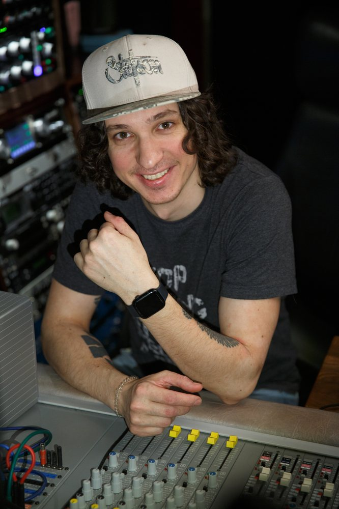
Музыкальный продюсер и звукорежиссёр
Высшее профильное образование: ИСИ, 2018. Работа в студии, лекции по звукорежиссуре и наставничество в музыкальном направлении.
sambruev.ru04 / Признание
 ДОКУМЕНТ 01
ДОКУМЕНТ 01  ДОКУМЕНТ 02
ДОКУМЕНТ 02  ДОКУМЕНТ 03
ДОКУМЕНТ 03 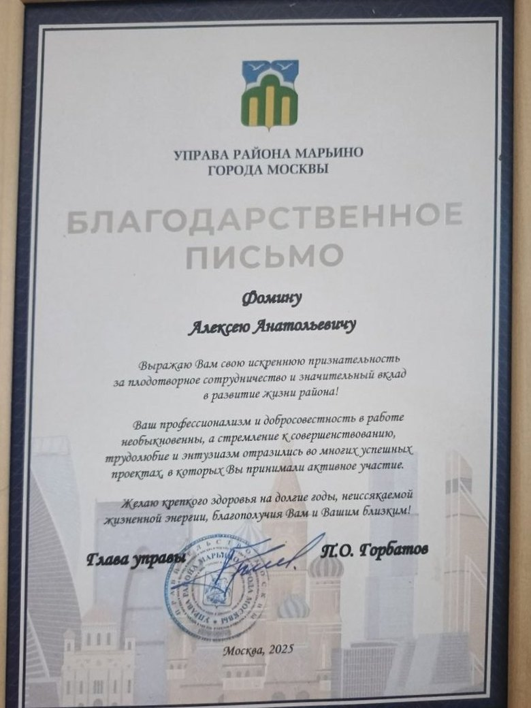
ДОКУМЕНТ 04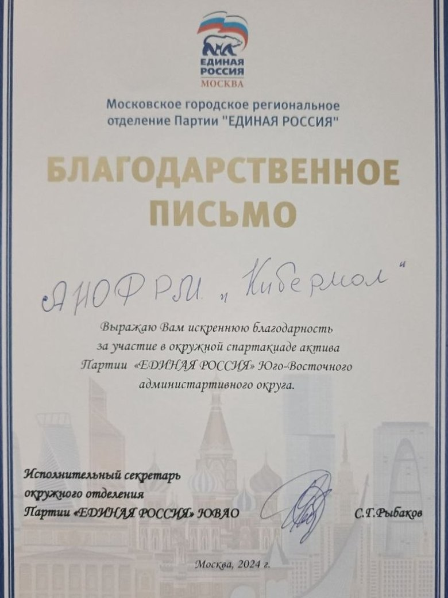
ДОКУМЕНТ 05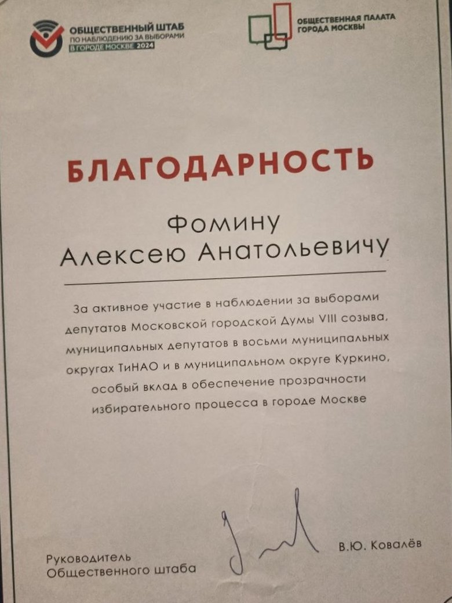
ДОКУМЕНТ 06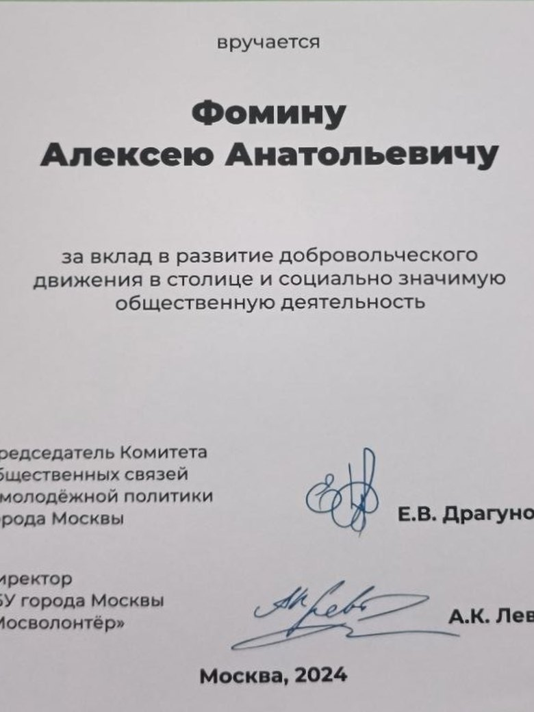
ДОКУМЕНТ 07 ДОКУМЕНТ 08
ДОКУМЕНТ 08 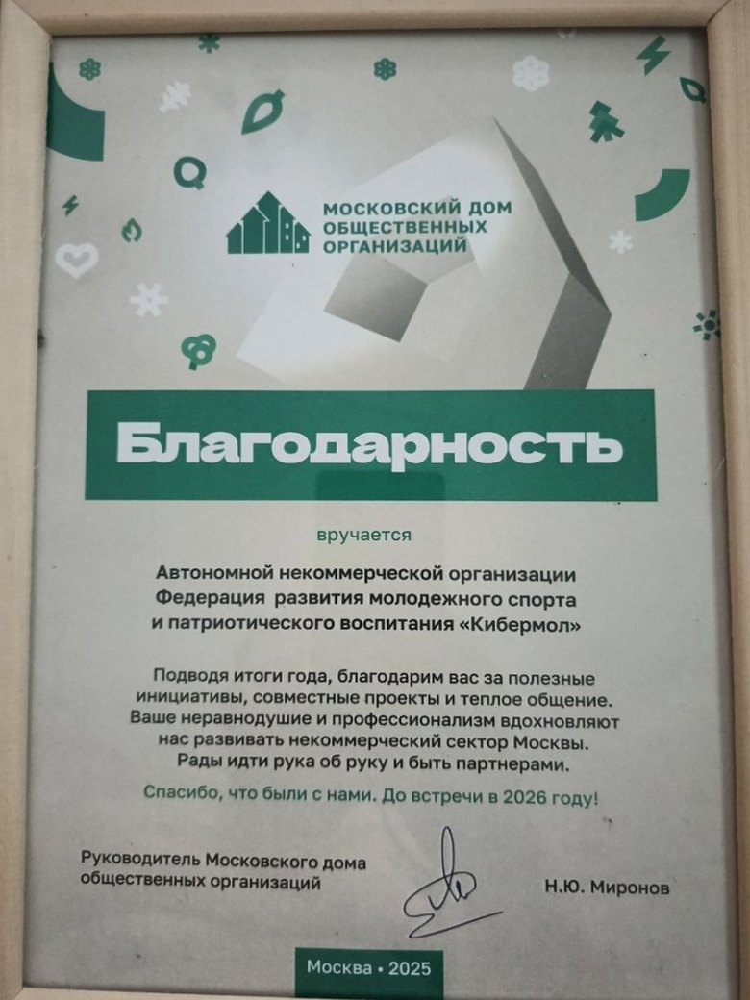
ДОКУМЕНТ 09 ДОКУМЕНТ 10
ДОКУМЕНТ 10  ДОКУМЕНТ 11
ДОКУМЕНТ 11 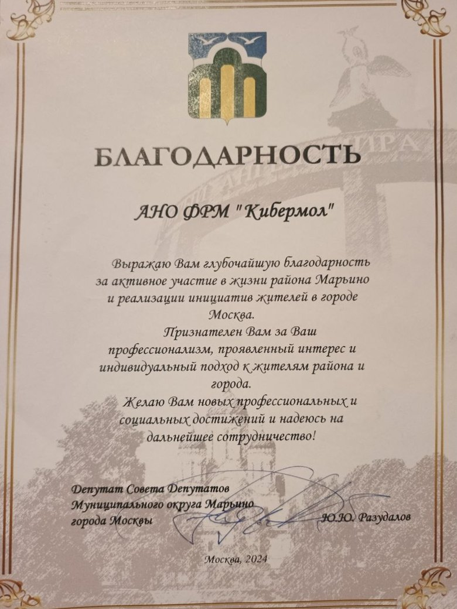
ДОКУМЕНТ 12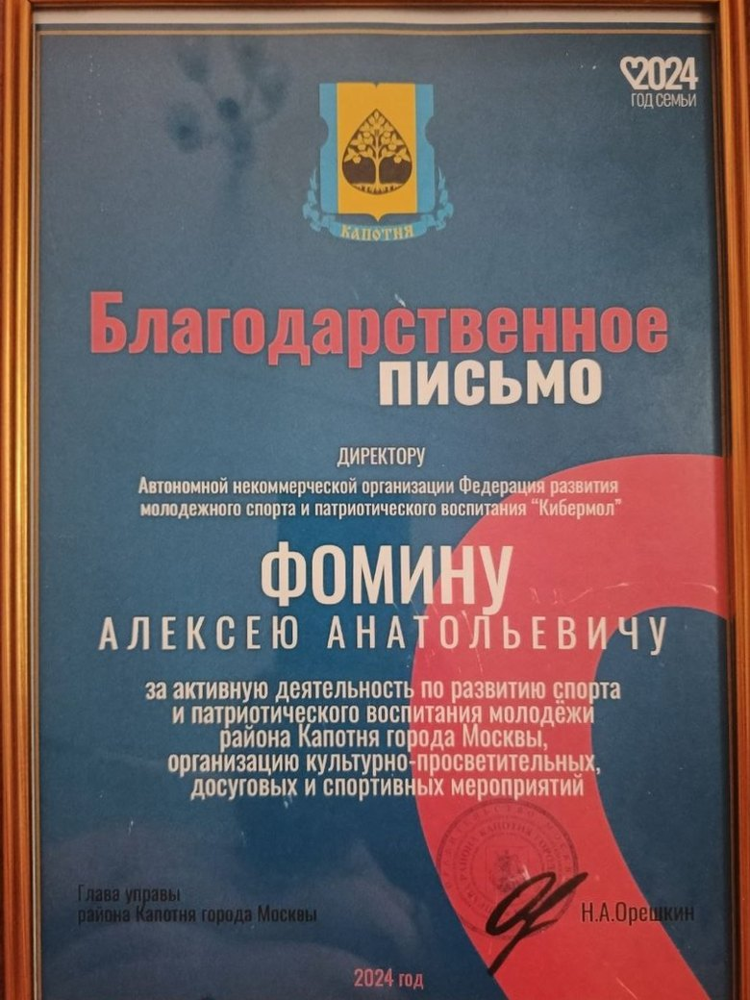
ДОКУМЕНТ 13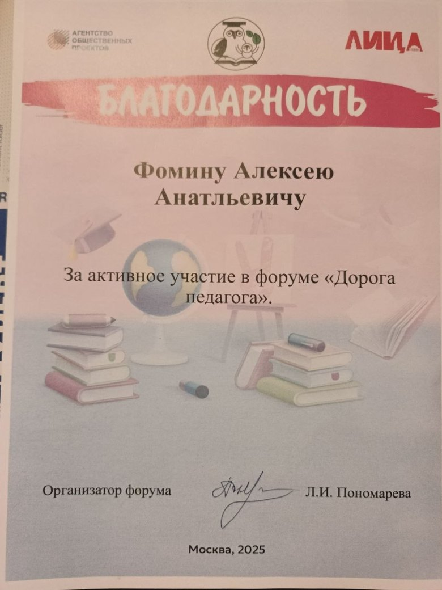
ДОКУМЕНТ 14 ДОКУМЕНТ 15
ДОКУМЕНТ 15  ДОКУМЕНТ 16
ДОКУМЕНТ 16 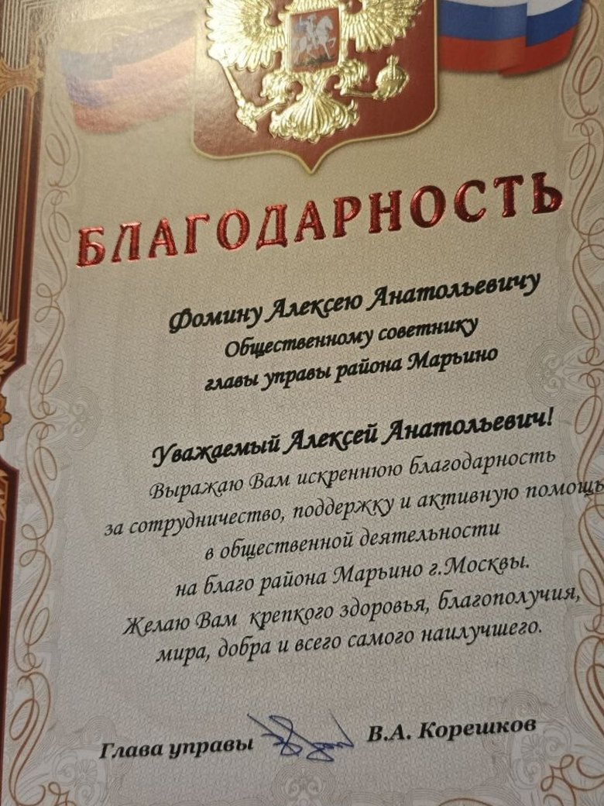
ДОКУМЕНТ 17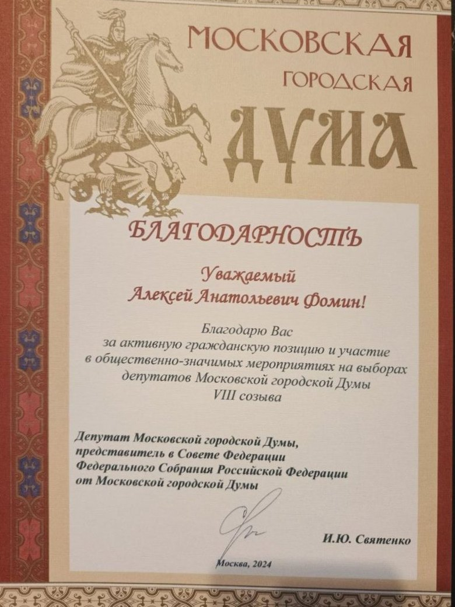
ДОКУМЕНТ 18ПАРТНЁРЫ
Вместе с нами
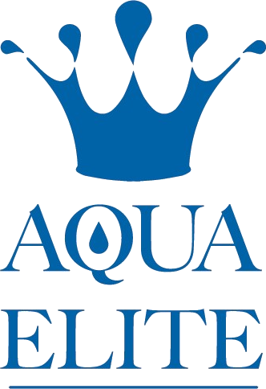
05 / Первый шаг
Расскажите, что вам интересно. До первого посещения важно уточнить условия и задать команде свои вопросы.
Связаться с командойСпорт, музыка, волонтёрство или другое направление. Можно начать с вопроса.
Позвоните или напишите команде. Родители могут обратиться от имени ребёнка.
Уточните возраст, расписание, место и условия выбранного занятия перед посещением.
Участникам и родителям
Посмотрите, что вам интересно: спорт, музыка, волонтёрство или другие проекты. В обращении можно указать несколько интересов. Для первого разговора не обязательно останавливаться на одном.
Возраст участников, расписание, место занятия и условия участия. Напишите, какое направление интересно вашему ребёнку, и задайте команде эти вопросы.
Расписание и место выбранного занятия уточняйте перед посещением. Контактный адрес организации: Москва, Капотня, 5-й квартал, д. 26.
Свяжитесь с командой по телефону или почте и уточните условия выбранного направления перед записью.
Предложите свой формат помощи или совместного проекта. Для этого есть отдельная кнопка «Обсудить партнёрство» ниже.
06 / Партнёрство
Спорт, музыка и помощь людям объединены общей целью: развитием молодёжи. Хотите участвовать в этой работе? Обсудим поддержку и совместные проекты.
Кнопка откроет почтовое приложение. Отправьте письмо из него.07 / Контакты
Хотите присоединиться, задать вопрос о занятиях или предложить проект? Свяжитесь с командой удобным способом.
Для знакомства с организацией или подготовки партнёрства можно запросить документы у команды.
{kind=link}
{kind=link}
{kind=link}
{kind=link}
{kind=link}
{kind=link}
{kind=link}
{kind=link}
{kind=link}
{kind=link}
{kind=link}